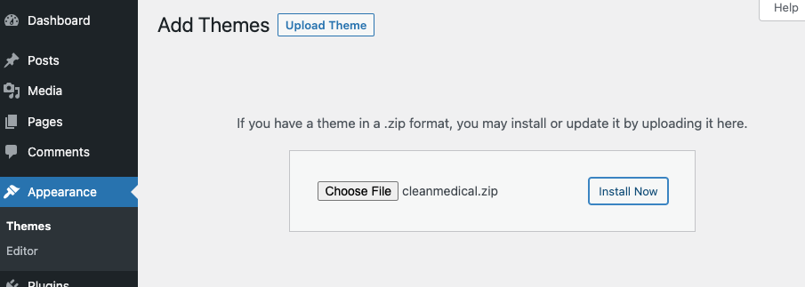
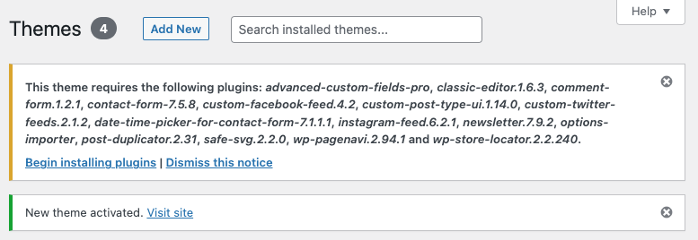
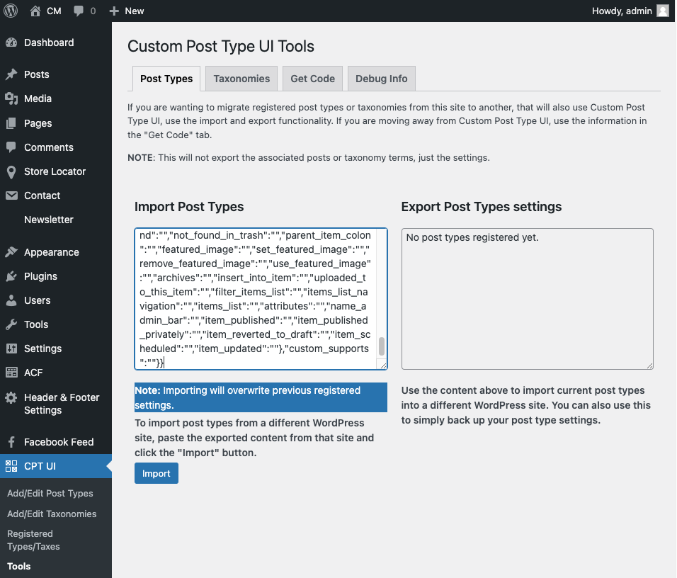
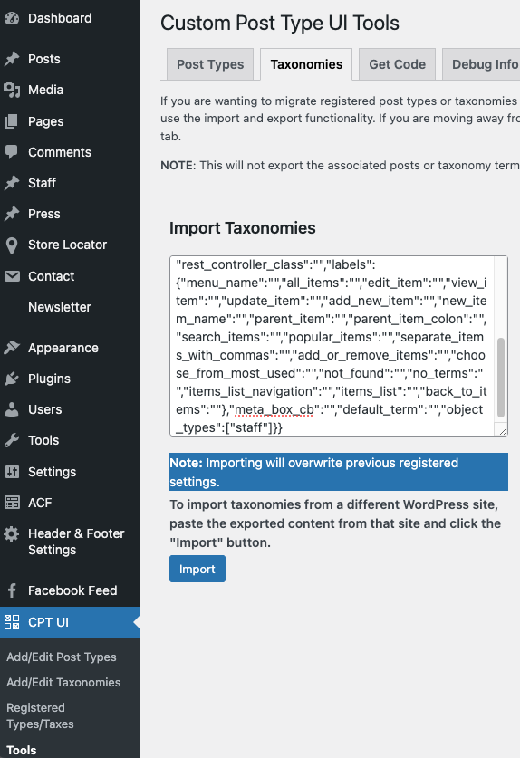
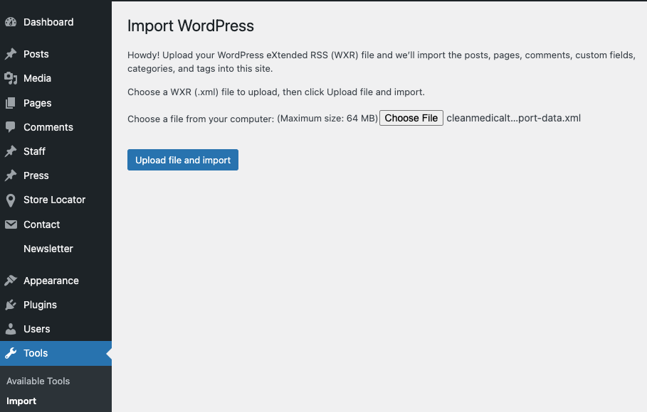
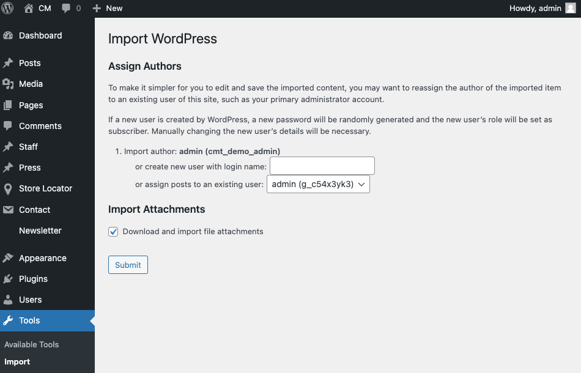
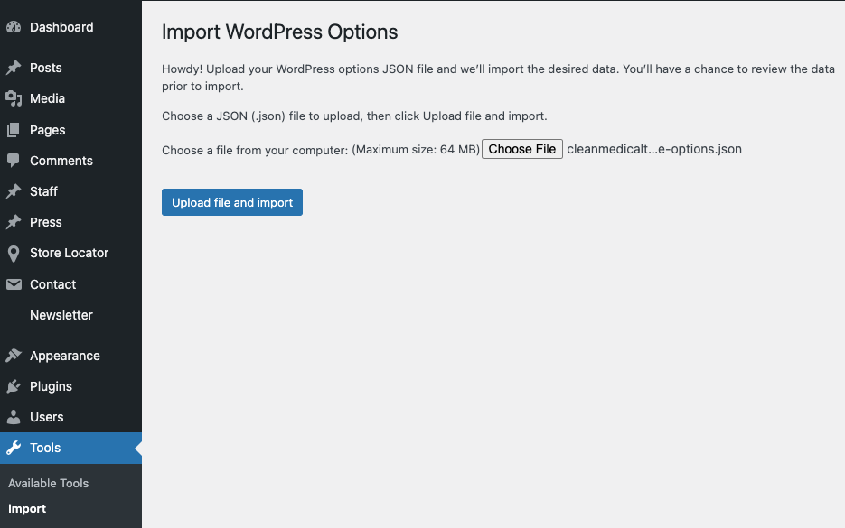
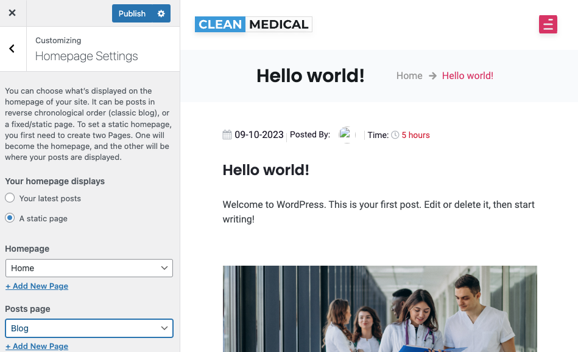

It is VERY important you follow all these steps in the exact same order, else your installation will not work.
In Wordpress, go to Appearance -> Themes and click on "Add New" then "Upload Theme". Upload and install the theme (cleanmedical.zip) and activate the theme

After activating the theme, at the top of the admin it will show a list of plugins required by the theme. Install AND activate all of them (no downloading required, they are bundled with the theme)

In Wordpress admin go to CPT UI -> Tools. Paste the contents of “import post types - copy and paste.txt” in the area titled "Import Post Types" and click Import. IMPORTANT: This step MUST be done before Step 5 below!

In the same CPT UI -> Tools area, click on "Taxonomies". Paste the contents of “import taxonomies - copy and paste.txt” in the area titled "Import Taxonomies" and click Import. IMPORTANT: This step MUST be done before Step 5 below!

In Wordpress admin go to Tools -> Import. If the “Wordpress” importer is not already installed, install it. Then click on “Run Importer” under "Wordpress". Import the file “cleanmedicaltheme-import-data.xml” and assign an admin user for posts and choose to import attachments


In Wordpress admin go to Tools -> Import. Under “Options” click “Run Importer” to import options. Import the file “cleanmedicaltheme-options.json” and choose to import all options. These are only options related to this theme, it will NOT replace core Wordpress options

Set your Home Page and Blog page: Go to Appearance -> Customize in Wordpress admin. Click on “Homepage Settings” and set “Home” as Homepage and “Blog” as Posts page

That’s it for installation! You can now edit all various pages from the Wordpress admin. Make sure to set up your header and footer details (like contact info, hours, etc) under Header & Footer Settings, and also configure your Contact page map under Store Locator -> Settings (A Google Maps API key is not provided, you must provide your own Google Maps API keys). Continue reading on below for how to use the theme...
To update the logo with your logo, go to Wordpress admin -> Header & Footer Settings -> Main Header. Hover over the existing image and click the pencil icon to change the logo. Do the same thing in the same Wordpress area under the Footer tab (many may want to use a different size logo in the header vs the footer). Then go to Appearance -> Customize -> Site Identity. From there also update the logo and site title.
Header and footer details, such as contact info, locations, etc can be updated from Wordpress admin -> Header & Footer Settings -> Header top and Wordpress admin -> Header & Footer Settings -> Footer. For your tweets/posts from Twitter/X to show in the footer, you must link your Twitter/X account under Wordpress Admin -> Twitter Feeds. If you do not link your Twitter/X, this area is left blank. Do NOT change the Book appointment button configuration unless you know what you are doing and do not want to use the default book appointment functionality.
To edit the home page go to Wordpress Admin -> Pages and find the "Home" page and open it for editing. The actual content of the page is loaded from all the custom fields shown under the "Front Page" tab here. Under there, the sub-tabs allow you to edit each section.
From here you can edit the images and text which show in the carousel slider on the home page. You can upload any size image you want, but it will look better for the end user if they are all the same dimension images. You may add captions, descriptions and a link for each one.
This is the area to introduce your business with a picture and text
This is another section for the list of your services where you can provide images, captions and descriptions. You can upload any size image you want, but it will look better for the end user if they are all the same dimension images.
This is another carousel slider for the list of your testimonials where you can provide images, captions and descriptions. You can upload any size image you want, but it will look better for the end user if they are all the same dimension images. This is a different list of testimonials than your dedicated testimonials page. Most may choose to have a shorter list on their home page.
This is for a list of the certifications or awards your organization has received. You can upload images and titles here.
This is to configure the contact form shown on the home page. You should only need to change the image shown, so it matches your address. You may wish to provide a screenshot from Google Maps here. The form shortcode should not be edited unless you know what you're doing and want to use a different contact form. The default form shown can be edited under Wordpress Admin -> Contact -> Contact Form.
The contact page can be edited in two areas. The form itself is edited under Wordpress Admin -> Contact -> Contact form. In here you can change the fields, their labels, and how to handle the mail. The rest of the contact page can be edited under Wordpress Admin -> Pages -> Contact. You can edit the title, sub-title and if you want to edit the store/location finder, you must do that under Wordpress -> Store Locator. When adding a store/location include the latitude/longitude so directions finding works.
The book appointment forms can be edited under Wordpress Admin -> Contact. There are two forms here for booking appointments - one is the shorter general appointment booking form found on the footer and home page titled "Book your appointment". The other one titled "Book Appointment Staff" - this one is just for booking requests made under the Team/Staff page after clicking to view a staff member. The first thing you should do is edit the drop down list of services for which service the user wishes to book. You can add as many services as you want to the shortcode.
The Team/Staff page is edited in two places. For the staff types/categories you edit those under Wordpress Admin -> Staff -> Staff Types. Some default ones come with the sample data but you can change them. To edit the actual team members/staff, do that under Wordpress Admin -> Staff -> All Staff (or Add New).
The FAQ page is very simple to edit - under Wordpress Admin -> Pages -> FAQ. There are two sections - one for the list of FAQs, and another for handy help articles or other links you want to provide on the sidebar.
The Press page is also simple to manage/edit - under Wordpress Admin -> Press -> All Press (or Add New). The main Press page just pulls the excerpt, title and image. Upon clicking then the user views the full press details from the main content area on a separate page.
The Testimonials Page is edited directly under Wordpress Admin -> Pages -> Testimonials. From here you can provide a picture, content, reviewer name, designation/title (or other), and a signature or logo if desired. There are three different groups of testimonials - top section, best section and bottom section for Testimonials page.